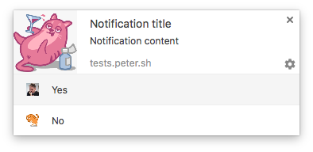

Hello World
CodeTengu Weekly 碼天狗週刊
CodeTengu Weekly 會在 GMT+8 時區的每個禮拜一早上 10:00 出刊，每一期會從目前的 curator 名單中選出三位來負責當期的內容，每一位 curator 各自負責不同的領域，如果你在這一期沒有看到自已感興趣的東西，說不定下一期就會有了。
你也可以瀏覽一下前幾期的內容，有價值的東西是不會過時的。
以下是目前的 curator 陣容：
- @vinta - I failed the Turing Test - 楊威利腦殘粉
- @saiday - Imnotyourson - 捷運飲食推廣委員會
- @tzangms - Oceanic / 人生海海 - 衝動型購物
- @fukuball - ImFukuball - 機器學習好難
- @wancw - App、Server、Data，不知何時向 F* 邁進
- @adamp33 - 看棒球才是正職，副業是前端工程師
- @mingderwang
- @kako0507 - 熱愛嘗試新事物的前端工程師
- @chiahsien - Nelson
大家也可以 follow 一下 CodeTengu 的 Facebook、Twitter 或 GitHub，有很多 Weekly 看不到的內容。有任何建議或疑問也可以來 Gitter 聊一聊，歡迎亂入 👺
 @saiday
@saiday
Approaches to Testing: A Survey
文章裡分析了常見的四種 Testing 的途徑：
- DHH (RoR 作者) style
- Classical TDD
- Mockist TDD
- Discovery Testing
用同樣的七個問題去檢驗這四種測試方法，並附上該方法常被議論的批評。
我覺得重點就是我們採用的測試方法會感染跟影響程式架構設計，同樣地，如果我們想採用一個跟目前 codebase 風格不符合的測試方法，會在一開始就遭遇巨大的障礙，巨大到不知道怎麼進行下去，很多人就是在這種情況下放棄 Testing 的。(這時候就可以考慮要不要先從 Acceptance test 及 Integration test 開始寫起)
但無論你是採用哪種方法，其實到最後大家因為 Testing 延伸出來有價值的討論都是 Testability 跟架構設計。
我還有一個深刻的體會是團隊中導入大家都同意的測試方法其實對統一大家的架構設計有很大幫助。
雖然沒有人想知道，但我自己看完他的介紹覺得我是偏向 Mockist 流派的，也確實我的程式碼風格已經長成這個流派的形狀了，大量的小型元件、大量的 Dependency Injection。
GitDo: Designing the app infrastructure
GitDo 是一個做 GitHub iOS Client 的團隊，這是他們寫的開發經驗談。
分享了選擇 Swift 為開發語言的好壞處、Entity, Model 遇到的問題跟建議、API Client 的設計方向、將商業邏輯抽成 Frameworks 的好處、 Carthage & CocoaPods、VIPER 架構、Realm or CoreData、Reactive Programming 經驗。
整體談得比較廣而淺，還在摸索中的人看起來也不會有問題，特別適合近期有新 project 要啟動的朋友，很多技術上的選擇都有包含到。
掰惹威，最近我也要開始一個新的 Swift 專案，而我跟他們技術選擇上的分歧有：
Creating your first iOS Framework
前一篇提到將自己的商業邏輯以 Frameworks 的方式獨立出來有可以跨平台、製作 Extensions 的好處，其實值得投資。
這篇就是以 Swift 為開發語言建立 Framework 的教程，包含了 Carthage 跟 CocoaPods 的整合。
DevOps on Android: From one Git push to production
在 Android 的生態裡面要建立 CI, CD 因為有 Gradle 跟 Google Play Developer API 的加持是相對簡單的。
我甚至都在想當在 GitHub 上面有人開 Pull Request 的時候，就 build 一個 beta 版本送到 slack 或是夾帶到 Pull Request comment。
這一篇關於 continuous delivery 的教學講得算是鉅細彌遺，大家可以參考一下。甚至我們還可以直接用 gradle-play-publisher 這個 Gradle plugin 來幫助你操作上傳到 Google Play 的這個過程。
Continous integration on Android with travis CI
既然上一篇是在介紹 Android 的 CD，那麼沒有一個 CI 還是不行的。
現在 CI 的服務我想最熱門的還是 Travis CI，他對於 Open Source 是免費的。還有另一個選擇是 Circle CI，但我對於他的 outputs 分 section 這件事情實在是無法接受。
這篇文章除了介紹 Android 怎麼使用 Travis CI 之外，也有提到在 CI 上你除了 build APK 之外還應該要跑什麼。(CodeTengu 32 期 也有提到 Help developers with custom Lint rules，串上 CI，一切都很美好！)
@adamp33

瀏覽器通知還可以加按鈕？
Google Chrome v50 將會為 Notification API 加上按鈕，讓使用者能在通知做特定動作，類似瀏覽器的 confirm，相當實用。
一年不用 jQuery
jQuery 自從 2006 年釋出後，可說是前端界最重要的函式庫，也促使制定許多 HTML5、新版 ECMAScript 的 API。但隨著瀏覽器原生的功能與 ECMAScript 越來越強大，對於 jQuery 的需求已經漸漸減少，一名叫做 Patrick Kunka 的工程師分享他和團隊一年不用 jQuery 的心得，相當值得前端工程師們思考。
用 em 和 rem 搭配來做 RWD 字體大小
一般前端工程師在指定網頁字體大小時，多用 px 來處理。但對於不同尺寸螢幕的瀏覽體驗做 Responsive Web Design 時，字體大小應該更為彈性，使用 rem 和 em 來當作字體大小的單位可以讓程式更為簡潔，也易於維護。
 @mingderwang
@mingderwang
星際大戰
放下你手中的程式, 教教身旁的親戚朋友或小孩子們寫 code, 也許是一件再快樂不過的事了。
相信嗎, 從 6 歲到 106 歲都可以學, 用程式積木來玩 星際大戰 遊戲。如果都過關了, 這裡還有更多遊戲可以玩, 讓你知道寫程式跟玩遊戲一樣簡單。記得第一次進入時, 要選 "繁體字" 喔！
I like this NEW way to learn code
學程式最好玩的地方, 就是這群人永遠對現有的東西不滿足。寫 GUI 或前端的人, 一開始堅持一種最完美的架構 MVC (Model-View-Controller); 之後陸續出現 MVP, MVVM (最典型的是 knockout.js, 直到之前很紅的 Angular.js 的 MVW (已經沒什麼好說了, 就說 Model-View-Whatever...)。重點是, 今天要學一種最新的 whatever, 叫 FRP (Functional Reactive Programming), 以 Cycle.js 為例, 我喜歡右下角的 "OPEN CHAT", 有問題, 直接提問...
The future of drones is apps
我想這已經不是第一次我介紹四軸飛行器 drones 了, 那麼 drones 跟程式有什麼關係? 目前至少已經有兩家公司提供 drones 的 SDK, 一家是大陸公司叫 "大疆" DJI, 它的 SDK 叫 Onboard-SDK; 另一家是 3D Robotics (3DR), 開發工具叫 DroneKit, 它們主推開源 ArduPilot, 特點是也能用 python 開發。
想想看, 再過幾年 drone 程式的開發工具更方便了, 跟 Android 或 iOS 程式開發沒什麼兩樣, 它只是一個長了翅膀的 smartphone 罷了。
Random Cool Stuff
Michael Tsai - Blog - Facebook Tests Users’ Reaction to Crashes
Facebook 在他們的 Android 用戶之間秘密進行一個測試，製造一些人工的 crash 讓用戶在一段時間內幾乎無法使用 Facebook native app。而即便如此，用戶還是會透過瀏覽器去上 Facebook。
哇塞，狂！
由 @saiday 提供